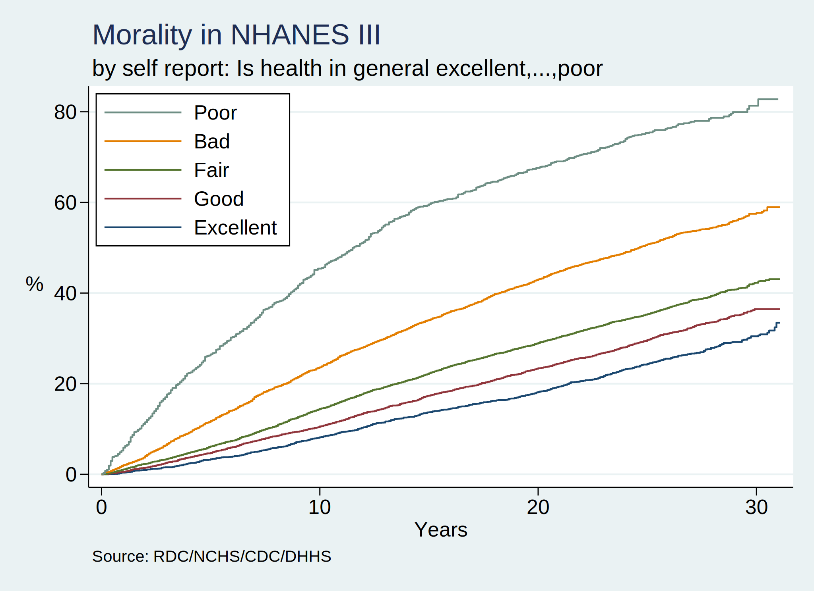
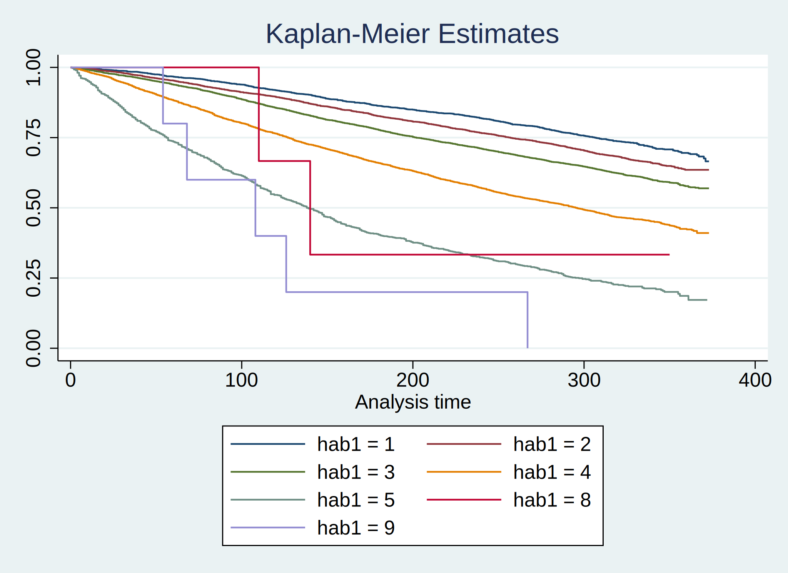

Mu Jin, Johns Hopkins Bloomberg School of Public Health
Junming Gong, Johns Hopkins Bloomberg School of Public Health
Xueer Zhang, Johns Hopkins Bloomberg School of Public Health
Sohyeon Kwon, Johns Hopkins Bloomberg School of Public Health
Background: The National Health and Nutrition Examination Survey (NHANES) is a comprehensive initiative tasked with evaluating the health and nutritional conditions of both children and adults in the United States. This distinctive survey is conducted through a blend of in-depth interviews and physical examinations. It is a cornerstone program of the National Center for Health Statistics (NCHS), a component of the Centers for Disease Control and Prevention (CDC).
For the 700 course, we curated a dataset with all the mortality records in the United States from 1959-2017 and wrote a basic Stata script that output a two-way plot showing annual trends in number of deaths during this period. For the final project, our group designed a program using NHANES data to conduct survival analysis for any of the varibles in the dataset.
Methods: This program is based on Stata/BE 17.0. This current program outputs an NHANES dataset with 22 pre-specified variables. Kaplan-Meier graph is used to show the difference between survival probality by exposure group. Scaled Schoenfeld residuals is used to test the proportional hazards assumption, and Cox proportional hazards model is used to evaluate the effect of selected variable on survival.
Results: This project outputs a Kaplan-Meier graphs by input variable, results from proportional hazards assumption test, and output a univariate Cox model. To call the program, you would use: survival_analysis variable name. We also showed an example, the exposure is hab1(general health status) and the outcome is time to death.
Here we run the original Stata program created by Professor Muzaale to generate mortality dataset for analysis:
. qui do https://raw.githubusercontent.com/jhustata/book/main/nhanes-alpha.ado
. set scheme s2color
. nhanes

Here is our survival program and an example using hab1 as exposure:
. use nh3andmort, clear
(NHANES 1988-1994, survey & mortality)
. di "obs: `c(N)' & vars: `c(k)'"
obs: 19599 & vars: 22
. stset permth_exm, failure(mortstat)
Survival-time data settings
Failure event: mortstat!=0 & mortstat<.
Observed time interval: (0, permth_exm]
Exit on or before: failure
--------------------------------------------------------------------------
19,599 total observations
2,313 event time missing (permth_exm>=.) PROBABLE ERROR
4 observations end on or before enter()
--------------------------------------------------------------------------
17,282 observations remaining, representing
7,149 failures in single-record/single-failure data
4,579,308 total analysis time at risk and under observation
At risk from t = 0
Earliest observed entry t = 0
Last observed exit t = 373
.
. capture program drop survival_analysis
. program define survival_analysis
1. args varname
2.
. sts graph, by(`varname') title(Kaplan-Meier Estimates)
3. graph export kaplan-meier.png,replace
4.
. di "Cox proportional hazards model for `varname':"
5. stcox `varname'
6.
. di "Proportional hazards assumption test for `varname':"
7. estat phtest
8.
. end
.
. survival_analysis hab1
Failure _d: mortstat
Analysis time _t: permth_exm
file /Users/mujin/Downloads/advstata_final/kaplan-meier.png saved as PNG format
Cox proportional hazards model for hab1:
Failure _d: mortstat
Analysis time _t: permth_exm
Iteration 0: log likelihood = -67692.424
Iteration 1: log likelihood = -67155.866
Iteration 2: log likelihood = -67155.856
Refining estimates:
Iteration 0: log likelihood = -67155.856
Cox regression with Breslow method for ties
No. of subjects = 17,282 Number of obs = 17,282
No. of failures = 7,149
Time at risk = 4,579,308
LR chi2(1) = 1073.14
Log likelihood = -67155.856 Prob > chi2 = 0.0000
------------------------------------------------------------------------------
_t | Haz. ratio Std. err. z P>|z| [95% conf. interval]
-------------+----------------------------------------------------------------
hab1 | 1.446283 .0162612 32.82 0.000 1.41476 1.478508
------------------------------------------------------------------------------
Proportional hazards assumption test for hab1:
Test of proportional-hazards assumption
Time function: Analysis time
------------------------------------------------
| chi2 df Prob>chi2
-------------+----------------------------------
Global test | 86.25 1 0.0000
------------------------------------------------

Conclusions: NHANES is a large databased with 19599 participants surveyed and 26 questionnaire, exam, and lab items captured. It is soon going to be fully accessible to Stata users, in no small part because of this humble capstone project.
This program can easily run and show the results for a survival analysis between a variable in the dataset and time to death for NHANES participants from 1959-2017.
Acknowledgments: We initially published our Stata output in a Jupiter-book hosted by Github. All the .html content of the book was produced in a Python environment; however, Stata .html output will gradually replace the Python-based output of the book as we truly become advanced Stata users!
VS Code terminal is our IDE choice for committing and pushing our git content to our hub and have established a seamless process for updating our publication.
We used the Stata program and abstract template originally created by Professor Muzaale and we appreciated his kind help during this course.
References:
{kind=link}